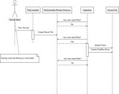
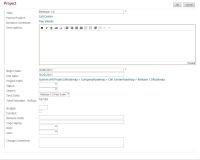
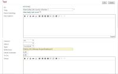
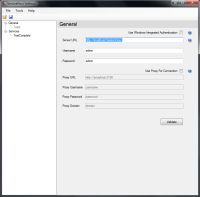
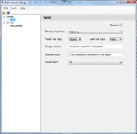
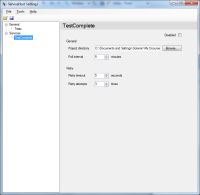

Description
The VersionOne TestComplete Integration (V1TestComplete) imports TestComplete test results into VersionOne, making the latest test results more visible across the organization. The results can be recorded at two different levels of granularity, project and test. The aggregate results for a suite of tests in TestComplete can be linked to a project in VersionOne, so that everyone can see the health of their project from a testing standpoint from within VersionOne. The results of an individual TestComplete acceptance test can be linked to a Test in VersionOne, so that development team members receive quick feedback on which tests are passing and failing.
Once V1TestComplete has been installed, VersionOne users update the reference field for test suites or tests with the path to the corresponding suite or test in TestComplete. A single VersionOne test suite can be assigned to one or more VersionOne projects. The Test Run Trend report shows the aggregated test results for the test suite which was assigned to the project at the time of the test run. For individiual tests, each test in VersionOne should have its own test in TestComplete. V1TestComplete considers a test passing if all of the assertions for that test are passing. If a test fails on a story or defect that is already closed, V1TestComplete can be configured to create a defect in the current iteration, so the team is notified of the failing test.
The following sequence diagram illustrates how V1TestComplete interacts with TestComplete and VersionOne.

{kind=link}
System Requirements
- VersionOne: 9.0 or above, including Team Edition
- Integration Server:
- Operating System — Windows 2003, 2008
- Framework — Microsoft .Net 2.0 SP1
- AutomatedQA TestComplete Release 6.5.2 - 7.0.409.3
Download
The latest version of V1TestComplete is available from the VersionOne Community site
Installation
These installation instructions assume that TestComplete is already installed, configured, and working properly.
- Determine Install Location
V1TestComplete can be installed on any server with network access to both VersionOne and your TestComplete Test results. Exact placement should be determined by your internal software management requirements. The integration server must meet the System Requirements stated above.
- Extract Files
Download V1TestComplete using the link above and extract it into a folder of your choice.
- Configure
- Start integration
Open up the command prompt, navigate to your installation folder, and run the following command:VersionOne.ServiceHost.exe
If you have configured your system properly, you should see the following output
C:\V1\TestComplete>VersionOne.ServiceHost.exe Loaded VersionOne.ServiceHost.Logging.ConsoleLogService, VersionOne.ServiceHost.Core. Loaded VersionOne.ServiceHost.Logging.FileLogService, VersionOne.ServiceHost.Core. Loaded VersionOne.ServiceHost.Core.Services.TimePublisherService,VersionOne.ServiceHost.Core. Loaded VersionOne.ServiceHost.TestServices.TestComplete.TCReaderService, VersionOne.ServiceHost.TestServices. Loaded VersionOne.ServiceHost.Core.Services.TimePublisherService, VersionOne.ServiceHost.Core. Loaded VersionOne.ServiceHost.TestServices.TestWriterService, VersionOne.ServiceHost.TestServices. [Info] Initialized ConsoleLogService [Info] Initializing FileLogService [Info] Initialized FileLogService [Info] Initializing ProfileFlushTimer [Info] Initialized ProfileFlushTimer [Info] Initializing TCReaderService [Info] Initialized TCReaderService [Info] Initializing TCReaderServiceTimer [Info] Initialized TCReaderServiceTimer [Info] Initializing TestWriterService [Info] Initialized TestWriterService [Startup]
- Test the integration
To test the integration, execute a TestSuite in TestComplete.
When V1TestComplete and VersionOne are configured correctly you should see data being published into VersionOne.C:\V1\TestComplete>VersionOne.ServiceHost.exe Loaded VersionOne.ServiceHost.Logging.ConsoleLogService, VersionOne.ServiceHost.Core. Loaded VersionOne.ServiceHost.Logging.FileLogService, VersionOne.ServiceHost.Core. Loaded VersionOne.ServiceHost.Core.Services.TimePublisherService,VersionOne.ServiceHost.Core. Loaded VersionOne.ServiceHost.TestServices.TestComplete.TCReaderService, VersionOne.ServiceHost.TestServices. Loaded VersionOne.ServiceHost.Core.Services.TimePublisherService, VersionOne.ServiceHost.Core. Loaded VersionOne.ServiceHost.TestServices.TestWriterService, VersionOne.ServiceHost.TestServices. [Info] Initialized ConsoleLogService [Info] Initializing FileLogService [Info] Initialized FileLogService [Info] Initializing ProfileFlushTimer [Info] Initialized ProfileFlushTimer [Info] Initializing TCReaderService [Info] Initialized TCReaderService [Info] Initializing TCReaderServiceTimer [Info] Initialized TCReaderServiceTimer [Info] Initializing TestWriterService [Info] Initialized TestWriterService [Startup] [Info] Starting Processing File: C:\Program Files\Automated QA\TestComplete 6\Samples\Open Apps\OrdersDemo\C#\TCProject\C#Script\Log\5_19_2009_1_04 PM_45_362\RootLogData.dat [Info] Found 2 testRuns and 1 suiteRuns. [Info] Publising suiteRun: Orders.Orders_C#_C#Script - TestComplete Test Suite - 5/19/2009 1:04:58 PM - Orders.Orders_C#_C#Script - (1,1,0) 0 ms [Info] Suite: TestRun.TestSuite = TestSuite:1743 TestRun.Name = Orders.Orders_C#_C#Script TestRun.Description = TestComplete Test Suite TestRun.Date = 5/19/2009 1:04:58 PM TestRun.Passed = 1 TestRun.Failed = 1 TestRun.NotRun = 0 TestRun.Elapsed = 0 [Info] Publising testRun: 5/19/2009 1:04:58 PM - Orders_C#_C#Script.ProjectTestItem2 - Failed - 0.0160008436068892 ms [Info] Publising testRun: 5/19/2009 1:04:58 PM - Orders_C#_C#Script.ProjectTestItem1 - Passed - 13.6090025771409 ms [Info] Finished Processing File: C:\Program Files\Automated QA\TestComplete 6\Samples\Open Apps\OrdersDemo\C#\TCProject\C#Script\Log\5_19_2009_1_04 PM_45_362\RootLogData.dat
Configuration
Configure VersionOne
| If you are using Team Edition, you need to manually create the Test Suite. Instructions for doing this are available on the VersionOne Community Site. |
- Add a TestSuite in VersionOne
- Assign the VersionOne TestSute to a Project
Once the TestSuite is created, it must be assigned to a Project. To accomplish this, edit the VersionOne Project details.
 - Set the Reference Field on Test that are automated using TestComplete
Before V1TestComplete can update a test in VersionOne you must associate the VersionOne test with the TestComplete test. To configure this association, you need to edit the VersionOne Test artifact and enter the TestComplete test suite and test name in the Reference field.

{kind=link}
{kind=link}
{kind=link}
{kind=link}
Configure the Integration
To configure V1TestComplete you need to run the ServiceHost configuration tool
ServiceHostConfigTool.exe
The following section describes how to configure your TestComplete integration using the use the configuration tool
- Specify your VersionOne connection details on the General

The following table describes the fields on this tabField Description Server URL This is the URL to your VersionOne server Username VersionOne user that will create defects Password Password for the specified user Use Windows Integrated Authentication Check this box if you VersionOne server is configured to use Windows Integrated Authentication 
When using the integrated authentication, V1TestComplete will authenticate to VersionOne using the Windows domain user under which the executable is running if both the username and password parameters are blank. If the username and password is entered, you must specify the windows domain account in the form "User@FullyQualifiedDomainName". If you are unsure what the fully qualified domain name is, see the Domain name shown on the 'Computer Name' tab in the My Computer...Properties dialog. If there's a proxy between this machine and the VersionOne instance, you'll also need to configure the following settings:
Field Description Use Proxy For Connection Determines if the integration tries to connect through a Proxy Proxy URL This is the URL to your Proxy Server Proxy Username The username that will get you past this proxy Proxy Password The password for the Proxy Username Proxy Domain Name of Proxy Domain - Once the VersionOne parameters are entered, press Verify button to continue.
- Specify how to update Test in VersionOne on the Tests tab.

The following table describes the fields on this tabField Description Disabled Check this box to disable ChangeSet creation in VersionOne. Reference Field Name VersionOne Field name to search for TestComplete test identifier. It's recommended that you use the Reference field; however if you are already using this field for another purpose, you may choose another text field, including custom fields. Test Passed Status Value to set when a TestComplete test passes Test Failed Status Value to set when a TestComplete test fails Change Comment Comment to use when setting values on VersionOne tests Description Suffix If you are creating Defects, this text will appear in the description field Create Defect Indicates whether V1TestComplete should create VersionOne Defects when a TestComplete test fails for closed tests in VersionOne. Valid values are:
* All: The integration will create a VersionOne Defect for any closed test in the project when the TestComplete test fails
* Current Iteration: The integration will only create VersionOne Defects for closed tests within the current iteration when the TestComplete test fails
* None: The integration never create VersionOne Defects - Specify your TestComplete details on the TestComplete tab.

The following table describes the fields on this tabField Description Disabled Check this box if you want to disable polling TestComplete for Test Results. Project Directory The directory containing the TestComplete Project you wish to poll. Poll Interval How frequently to check the Project Directory for test result files. Retry Timeout How log to wait if the integration encounters an error when attempting to read test result files. This can occur if TestComplete is writing results when the integration polls to read results. Retry Attempts Number of times to retry when an error occurs before stopping - Save your changes and exit the program
{kind=link}
{kind=link}
{kind=link}
Technical Details
VersionOne.ServiceHost.exe.config
VersionOne.ServiceHost.exe.config is the file that controls the behavior of VersionOne.ServiceHost.exe. Values in this file are set by the configuration tool (ServiceHostConfigTool.exe). This section is provided for informational use only. Users are discouraged from editing this file directly.
The TCReaderService watches for new result files, interprets TestComplete test results, and publishes the results to the TestWriterService. The following table describes the elements nested under TCReaderService.
| Element Name | Description |
|---|---|
| ProjectSuitConfig | Fully qualified path to TestComplete project file |
| RetryTimeout | Timeout between attempts to process test results while TestComplete is executing the tests |
| RetryAttempts | Number of times to attempt result process before skipping |
The TestWriterService element controls how Tests are updated in VersionOne. The following table describes the elements nested under TestWriterService.
| Element Name | Description |
|---|---|
| ApplicationUrl | The URL for your VersionOne application |
| Username | The VersionOne account username, if using native VersionOne security. If using Windows Integrated Security, leave empty. |
| Password | The VersionOne account password, if using native VersionOne security. If using Windows Integrated Security, leave empty. |
| APIVersion | The minimum application version required for this hosted service. |
| IntegratedAuth | False if using VersionOne native security, True if using Windows Integrated Security. If VersionOne is configured to use Windows Integrated Security, the account the service is running as must be a configured VersionOne user with a project role of Team Member or higher. Also, Username and Password should be empty if IntegratedAuth is true. |
| PassedOid | The TestStatus asset Oid in VersionOne that indicates test a test succeeded |
| FailedOid | The TestStatus asset Oid in VersionOne that indicates that a test failed |
| TestReferenceAttribute | The cross-reference used to associate tests in VersionOne to test in the external test system ('Number' is the default, 'Reference' another option) |
| ChangeComment | The change comment put into history for any modifications the service makes in VersionOne |
| DescriptionSuffix | A suffix for the description of any defects that the service creates; Embedded Rich Text (HTML) is valid in this suffix |
| CreateDefect | Indicates whether the TestWriterService should create VersionOne Defects when a TestComplete test fails for closed tests in VersionOne. Valid values are:
|
The TCReaderServiceTimer element triggers the TCReaderService every N milliseconds. The following table describes the elements nested under TCReaderServiceTimer.
| Element Name | Description |
|---|---|
| Interval | Number of milliseconds to wait between polls to the TestComplete Project Directory |
| PublishClass | Do Not Change |